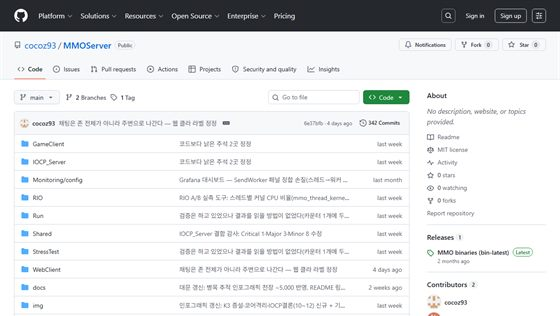
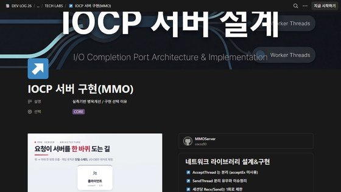
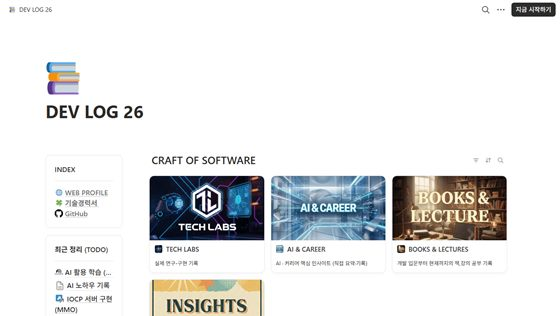
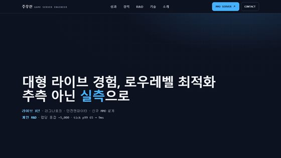

MMO 서버
전쟁밀도 동접 5,000
MO 서버
벨트스크롤 액션
링크 모음
GitHub · Notion
전체 구조
병목 개선
컨텐츠
전체
클라
네트워크
게임
데이터베이스
2D 탑뷰 MMORPG 컨텐츠
준비 중
벨트스크롤 MO 서버
준비 중

CODE
GitHub
MMO Server GitHub page
github.com/cocoz93/MMO_Zone ↗

NOTION
IOCP MMO
IOCP MMO 설계 문서
notion.site ↗

NOTION
DEV LOG 26
개발 일지와 학습 기록 전체. (Notion)
notion.site ↗

WEB
WEB PROFILE
포트폴리오 홈
cocoz93.github.io/portfolio ↗